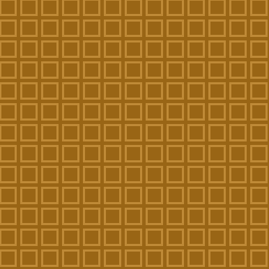
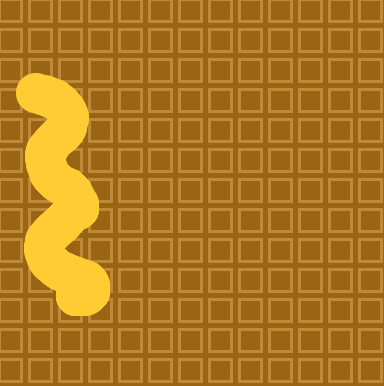
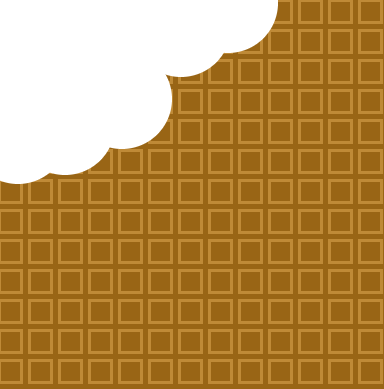
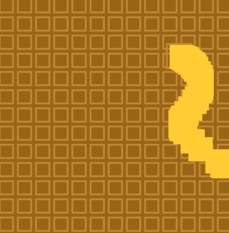

I got this idea because I was hungry.
The specifics of the code are loops, drawFunction and if/else.
I used a for loop for the squares. It loops all the squares and makes this and this looks like a waffle.
I used 2 draw functions, 1 is called drawSyrup and another one is called drawEat. I put the drawSyrup function in the mouseDragged function so that when I drag with my mouse it will drawSyrup and it looks like this.
The other draw function called drawEat, I put in my mouseClicked function so when I click on the waffle it will eat it. (It makes a white circle)
I put mouseX>200 in my if/else function, if your mouse pass 200x it will change to something else, I made to change to a rectange instead of circle.
In this project I learnt a lot about javascript,